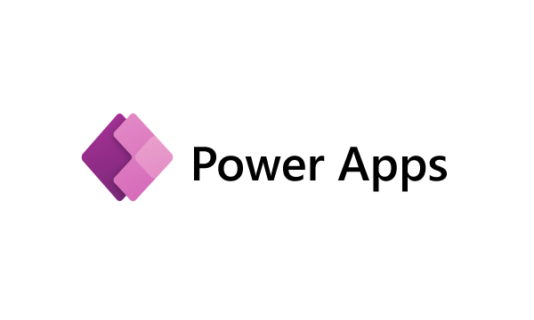

In the project, several reports are designed and served to
various departments within the organization. This process necessitates the implementation of complex ETL processes and SQL queries, with the "Order Confirmation Form in English" being the most frequently utilized one.

My Power Apps programs, are extensively used across various departments within our organization, showcasing their widespread adoption and effectiveness in addressing critical business needs.
These apps have become integral tools for enhancing productivity, streamlining processes, and ensuring quality standards, making a significant impact on our day-to-day operations.
In this project, I have developed three Power BI reports: "Kırıfire, Kalite Kontrol and Reklamasyon."
These reports are instrumental in providing valuable insights to different departments within the organization.
In the "Kırıfire" Power BI report, the focus is on detecting process failures, identifying their reasons, and analyzing their frequency to improve operational efficiency and address potential issues proactively.
The "Kalite Kontrol" Power BI report derives its data from the user's Power App named "Kalite Assurance." This integration allows for seamless data flow and analysis, enhancing quality control processes within the organization.